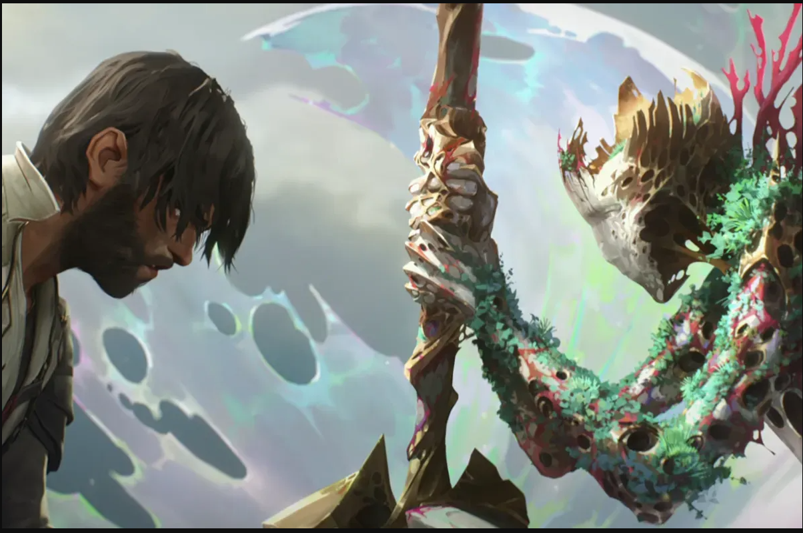

Melhores Episódios de Arcane
A série Arcane, baseada no universo de League of Legends, conquistou enorme sucesso de público e crítica. Desde sua estreia, recebeu diversos prêmios, incluindo 9 troféus no Annie Awards em sua primeira temporada e 7 na segunda, reafirmando sua excelência em categorias como Melhor Direção, Melhor Animação de Personagem e Melhor Design de Produção.
Episódios Mais Bem Avaliados
| Nome do Episódio | Temporada | Número | Nota IMDb |
|---|---|---|---|
| The Base Violence Necessary for Change | 1 | 3 | 9.7 |
| When These Walls Come Tumbling Down | 1 | 6 | 9.7 |
| The Monster You Created | 1 | 9 | 9.7 |
| Ekko's Dance of Realities | 2 | 7 | 9.6 |
| The Message Hidden Within the Pattern | 2 | 6 | 9.5 |
Galeria
